Bước vào không gian nghỉ dưỡng tuyệt vời tại Thanh Hóa !
Giữa khung cảnh biển xanh, cát vàng trải dài hơn 12 km thuộc huyện Hoằng Hóa, tỉnh Thanh Hóa, bãi biển Hải Tiến nổi lên như một "thiên đường nghỉ dưỡng" mới của du khách miền Bắc. Khu du lịch biển Hải Tiến trải dài trên địa bàn bốn xã Hoằng Trường, Hoằng Hải, Hoằng Tiến và Hoằng Thanh, cách trung tâm Hà Nội khoảng 155 km, thuận tiện cho các chuyến đi ngắn ngày. Điểm nhấn của biển Hải Tiến Thanh Hóa là bờ cát mịn, thoai thoải, sóng biển êm dịu và không có dòng xoáy nguy hiểm, rất lý tưởng cho gia đình và trẻ nhỏ. Xung quanh bãi cát là hàng phi lao xanh biếc, tạo thành "vành đai" tự nhiên đón gió biển mát rượi, đồng thời mang đến khung cảnh lãng mạn, thư thái.
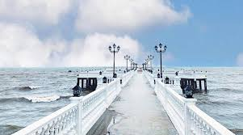
Nơi check-in nổi tiếng với khung cảnh biển tuyệt đẹp.
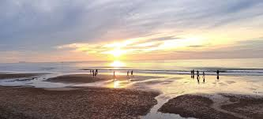
Bãi cát dài, nước biển trong xanh và không gian yên bình.
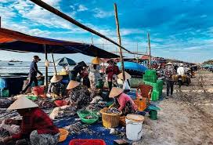
Nơi bạn có thể thưởng thức hải sản tươi sống.
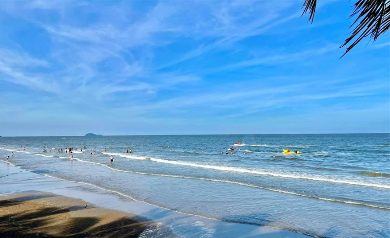
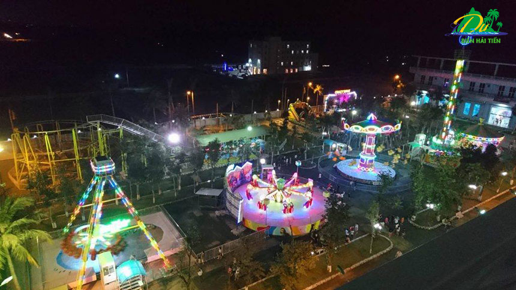
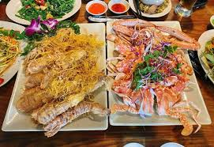
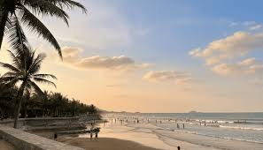
Những khoảnh khắc tuyệt đẹp ghi lại vẻ đẹp bình yên của biển Hải Tiến – từ bình minh rực rỡ trên bãi cát vàng đến những giây phút vui chơi và thưởng thức hải sản tươi ngon bên bờ biển.
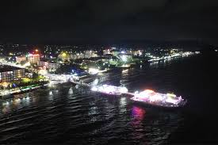
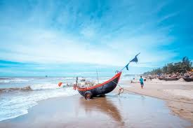
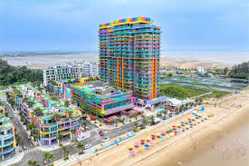
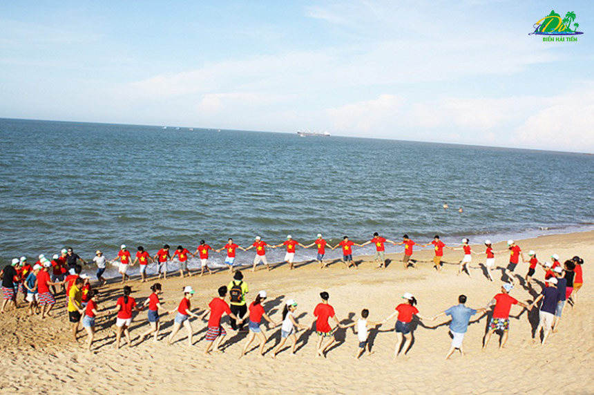
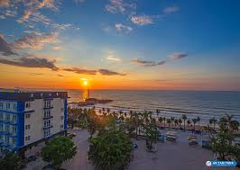
Từ một vùng chài nhỏ yên bình với những ngôi nhà tranh và nghề đánh bắt hải sản truyền thống, Hải Tiến đã trải qua hành trình thay đổi rõ rệt. Ngày xưa, bờ biển đơn sơ chỉ có vài con đường đất ven biển, ngư dân dùng lưới và thuyền nhỏ để mưu sinh, còn khách du lịch chỉ thỉnh thoảng ghé qua những ngày hè. Khi du lịch bắt đầu chú ý tới vùng biển này, Hải Tiến đã được đầu tư đường xá, hệ thống cơ sở lưu trú và dịch vụ ẩm thực, đồng thời diện mạo của vùng biển dần thay đổi với nhiều khách sạn, nhà hàng và khu vui chơi ven biển xuất hiện. Bãi cát dài hơn 12 km trở thành nơi nghỉ dưỡng lý tưởng; hàng phi lao xanh mát và bãi biển nông êm đềm khiến du khách yên tâm tắm biển và tận hưởng không khí trong lành. Hiện nay, Hải Tiến vẫn giữ được nét mộc mạc của làng chài cũ, nhưng đã hòa quyện cùng tiện nghi hiện đại và nhiều trải nghiệm du lịch đa dạng. Không chỉ là điểm dừng chân cho gia đình, Hải Tiến còn thu hút nhóm bạn trẻ và các cặp đôi với các hoạt động giải trí, ẩm thực biển và cảnh quan hoàng hôn lãng mạn. Tất cả điều đó đã biến Hải Tiến thành hành trình nghỉ dưỡng vừa thư thái vừa tràn đầy cảm hứng cho mỗi người.
Hãy lên kế hoạch cho chuyến du lịch đáng nhớ của bạn ngay hôm nay.